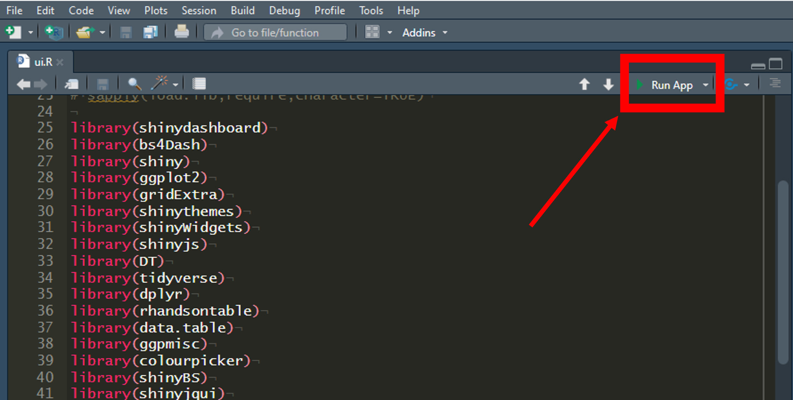

Download Locally
BioModME can be run on your local system using R.
Install R and RStudio
R and RStudio will need to be installed (tested locally with R 4.1.1 and RStudio 1.4.1717). Please check CRAN for the installation in R ( https://cran.r-project.org).
For the installation of RStudio, go to and follow instructions from https://www.rstudio.com.
Download BioModME from GitHub
Option 1 - Using Git Bash:
Open Git Bash
Change the current working directory to the location where you want the cloned directory.
Enter the following command
git clone https://github.com/MCWComputationalBiologyLab/BioModME.git
Press Enter to create your local clone of the application.
Option 2 - Direct Download:
Navigate to https://github.com/MCWComputationalBiologyLab/BioModME.
Click the green button “<> Code”.

Press download ZIP

Unzip folder in desired location.
Install R Repositories
BioModME uses a vast number of standard R repositories that will need to be downloaded. Open up the UI.R file from the downloaded file. This script loads all the needed libraries for the application to properly run. To install these repositories, you can run the following:
# Vector of package names to install
load.lib <- c("shinydashboard", "bs4Dash", "shiny", "ggplot2", "gridExtra","shinythemes",
"shinyWidgets", "shinyjs", "DT", "tidyverse", "dplyr", "rhandsontable", "data.table",
"ggpmisc", "colourpicker", "shinyBS", "shinyjqui", "bsplus", "deSolve", "plotly",
"Deriv", "viridis", "ggpubr", "shinycssloaders", "waiter", "fresh", "readxl",
"minpack.lm", "measurements", "qdapRegex")
# Remove any packages from list that are already installed
install.lib <- load.lib[!load.lib %in% installed.packages()]
# Install all packages in install list
for (lib in install.lib) install.packages(lib, dependencies = TRUE)
sapply(load.lib, require, character = TRUE)
All the required packages should now be installed.
Note
Current versions of RStudio will have a dropdown header telling you that you do not have all the packages installed and will provide you a button to click to install them all.
Start Application
The application can be started from base R by navigating to the application home folder and running the following:
shiny::runApp()
A more common way to run the app is to run it directly from RStudio. This is done by:
Open either “ui.R” or “server.R” in RStudio
Press bottom in top right of script that says “Run App”.
